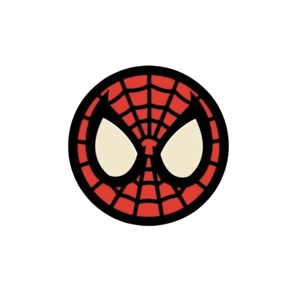

Amorzinho
Em construção... por favor, tenha paciência.
Mas spoiler...será sobre como eu amo meu namorado.
Essa página não é nem 1% do que eu gostaria de dedicar a Alex, mas mesmo assim,
quero deixar escrito em alguma parte desse site o quanto eu o amo. Como
escrito ali em cima essa página está em construção, e vai ficar assim por um
bom tempo, assim como todo o site, desejo alterar tudo, embelezar e adicionar
novas informações. A única coisa que desejo manter de fato é o carinho que
estou colocando em cada palavra, em cada tag e em cada número que faz essa
página, pois ela vai ser um lembrete de que o apoio que Alex vem me dando
está de fato tendo algum resultado.
Então, agradeço a Alex por sempre acreditar em mim e ser exatamente como aquela
cena do Tanjiro confortando um rapaz com um sorriso (não sei traduzir isso).
Alex vem me transformando em uma pessoa melhor e me mostrando sempre um lado
bom da vida, e isso, apenas sendo ele mesmo. Alex me lembra todas as coisas
que eu amo, pois agora, ele é sinônimo de amor.
Aliex - curiosidades bobinhas
namoradinhos que namoram desde 12/07/2024.
Incrivelmente, Alex foi quem pediu em namoro e chamou de amor primeiro.
O primeiro textinho romântico foi feito por Allie em um livro do mine.
Ambos fizeram playlist bonitinha no dia 12/06 se dando feliz dia dos namorados.
 Alex sabe fazer os melhores presentes, buquêzinho de allieversário.
Alex sabe fazer os melhores presentes, buquêzinho de allieversário.
Feliz aniversário de namoro, meu princípe!!!